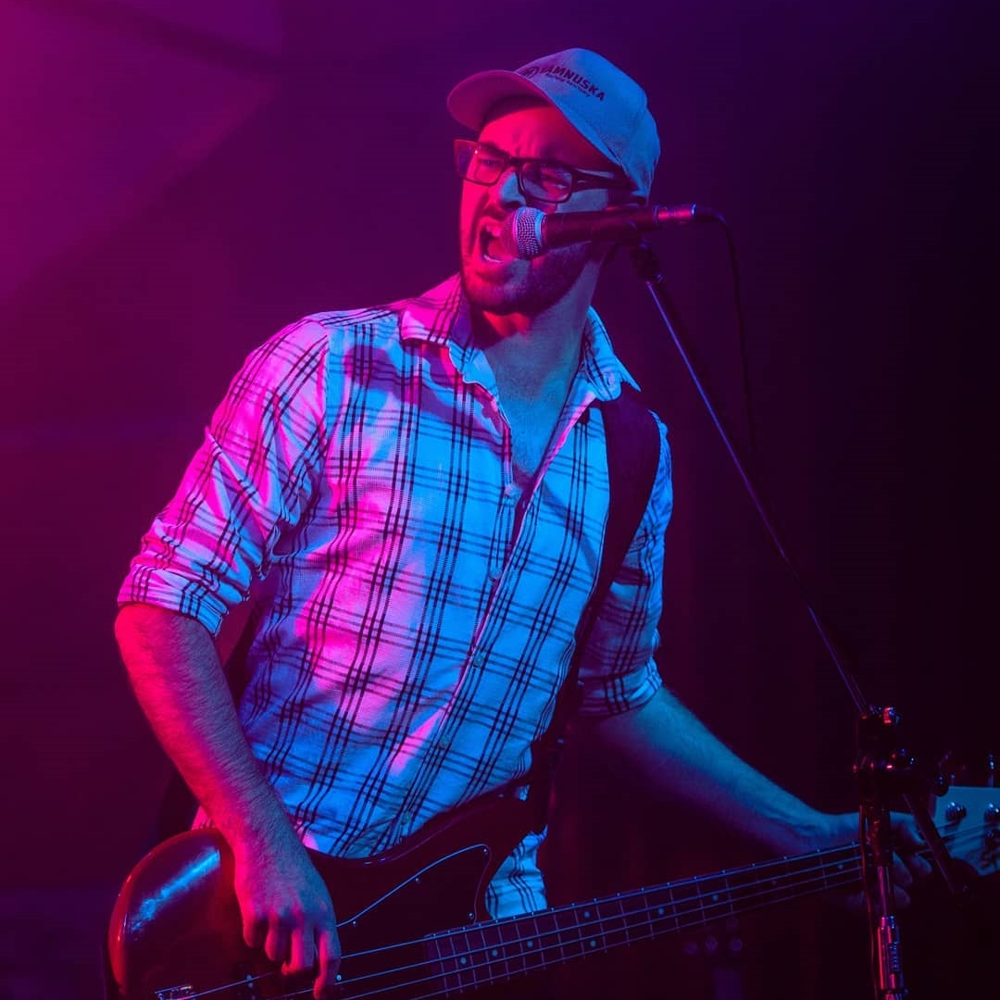

Based in Napier, New Zealand, Mirrored Walls started from humble
beginnings as an acoustic set, soothing melodies to stir the soul with music to fit.
Now armed with electric guitars, drums and bass,
Mirrored Walls becomes an electrifying act
with lyrics to provoke thought, music to stir emotion
and harmonic vocals to match the intensity that is 'Mirrored Walls'
An originals band that fits into all tangents of rock, post-pop punk,
post-emo, screamo and alternative.
We are Mirrored Walls
Members

Ben Dark
Vocals |
 Sophie Dark Vocals / Bass |
Regan Hughes Vocals / Guitar |
|
 Brad Stone Bass / Guitar |
 Dillon Malton Drums |
|
Ben Dark Vocals |
|
Sophie Dark Vocals / Bass |
|
Regan Hughes Vocals / Guitar |
|
Brad Stone Bass / Guitar |
|
Dillon Malton Drums |